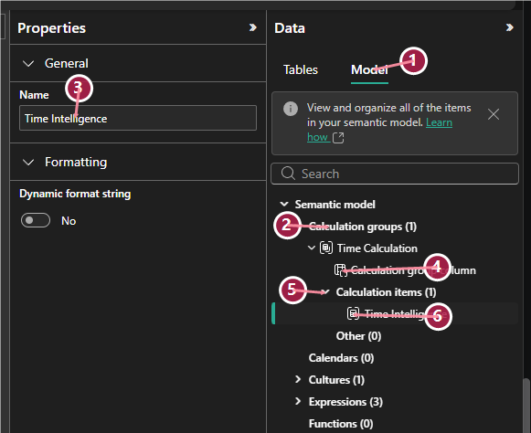

What you will produce
- Base measures
- Advanced time intelligence
- Calculation groups
- Ranking and Top N
- Dynamic titles and measure switching
Walkthrough tasks
Create base measures
- Create Sales Amount, Quantity, Gross Margin, Gross Margin %, Target, and variance measures.
- Format measures before building derived logic.
Explore context
- Use visuals and slicers to observe filter context.
- Use calculated-column examples only to explain row context.
Use CALCULATE patterns
- Create filter removal and KEEPFILTERS examples.
- Validate totals at customer, product, and date grains.
Add time and ranking patterns
- Create YTD, prior year, YoY, rolling period, rank, and Top N measures.
- Use ALLSELECTED where slicer-aware ranking is required.
Review calculation groups
- Use native Power BI Desktop calculation group authoring when available.
- Review TMDL View or Tabular Editor paths only when those workflows are validated.
- Compare calculation groups to separate time-intelligence measures when tooling is blocked.
Optimize and document
- Use variables and measure branching.
- Keep DAX Studio optional and Verify for Gov.
Module lab sequence
This sequence is generated from the matching lab README so the Markdown and HTML paths expose the same numbered labs.
Lab 1: Row context vs. filter context Core or module-dependent
Diagnose why measures evaluate differently in different visuals.
Lab 2: Context transition and `CALCULATE` Core or module-dependent
Use `CALCULATE` to intentionally modify filter context.
Lab 3: Advanced time intelligence Core or module-dependent
Create reusable time-intelligence measures.
Lab 4: Semi-additive measures Core or module-dependent
Understand measures that should not be summed across time.
Lab 5: Dynamic Top N and ranking Core or module-dependent
Rank customers and filter visuals to a dynamic Top N view.
Lab 6: Dynamic titles and measure switching Core or module-dependent
Make report text and metrics respond to user selections.
Lab 7: Calculation groups for reusable time intelligence Verify for Gov
Reduce repeated time-intelligence measures using a calculation group.
Lab 8: DAX optimization Verify for Gov
Improve readability and reduce repeated calculations.
Novice-friendly how-to guide
Create a measure
- In Report or Model view, select the table that should store the measure.
- Select Modeling > New measure.
- Type the measure name, equals sign, and DAX expression, such as
Sales Amount = SUM(FactSales[SalesAmount]). - Press Enter and set formatting in the Measure tools ribbon.
- Test the measure in a simple card or table before building derived measures.
Build a DAX test visual
- Add a table or matrix visual.
- Add one dimension field, such as
DimCustomer[CustomerName]. - Add the measure being tested.
- Add slicers for date, territory, or product category.
- Change slicer selections and observe whether totals respond as expected.
Use CALCULATE safely
- Start from a working base measure.
- Create a new measure with
CALCULATE([Base Measure], filter expression). - Use
REMOVEFILTERSwhen you intentionally want to ignore a dimension. - Use
KEEPFILTERSwhen you want to narrow existing filters instead of replacing them. - Compare the result against the base measure in the same visual.
Create a calculation group
- Confirm base measures such as
[Sales Amount]and[Gross Margin]work first. - Open Model view in Power BI Desktop.
- Select Calculation group from the ribbon.
- If prompted, enable Discourage implicit measures.
- Rename the calculation group table to
Time Intelligenceand the calculation group column toTime Calculation. - Rename the first calculation item to
Currentand set its expression toSELECTEDMEASURE(). - Add more calculation items from Model Explorer, then test the group with a date field and base measure.
Review TMDL or external-tool paths
- Use TMDL View only when the Desktop/PBIP workflow is validated.
- Use Tabular Editor only when external tools are approved.
- Document which path was used and whether it is allowed in the target environment.
- If no calculation group authoring path is validated, use separate DAX measures as the fallback.

| Callout | What it shows | How it maps to the steps |
|---|---|---|
| 1 | Model tab in the Data pane | Confirms you are working in the semantic model metadata, not only report fields. |
| 2 | Calculation groups node | Shows the calculation group container created by the ribbon command. |
| 3 | Name property | Rename the calculation group table to Time Intelligence. |
| 4 | Calculation group column | Rename this column to Time Calculation; this is the field users place in slicers or visuals. |
| 5 | Calculation items folder | Use this area in Model Explorer to add more calculation items. |
| 6 | First calculation item | Rename the initial item to Current and set its expression to SELECTEDMEASURE(). |
Implementation reference table
| Item to create | Exact name | Pattern or fields | Validation |
|---|---|---|---|
| Base measure | Sales Amount | SUM(FactSales[SalesAmount]) | Totals by customer/product. |
| Base measure | Quantity | SUM(FactSales[Quantity]) | Totals by product. |
| Base measure | Gross Margin | SUM(FactSales[GrossMargin]) | Totals by territory. |
| Derived measure | Gross Margin % | DIVIDE([Gross Margin], [Sales Amount]) | Formatted as percentage. |
| Target measure | Target Sales Amount | SUM(FactTargets[TargetSalesAmount]) | Totals by month/category. |
| Variance measures | Sales Variance, Sales Variance % | Actual minus target; percent uses DIVIDE | No divide-by-zero errors. |
| Time measures | Sales YTD, Sales Prior Year, Sales YoY | Use DimOrderDate[Date] | Validate by month. |
| Ranking measure | Customer Sales Rank | RANKX over DimCustomer[CustomerName] | Rank respects slicers. |
Detailed step-by-step procedure
- Open the PBIP model from Lab 1.
Confirm the model has FactSales, dimensions, date tables, targets, and segment tables. Do not start DAX work until the relationships are correct.
- Create a measure table.
In Power BI Desktop, create or choose a table to hold measures. Name measures consistently and place them in display folders if your model supports it.
- Create base measures first.
Create Sales Amount, Quantity, Gross Margin, Gross Margin %, Target Sales Amount, Sales Variance, and Sales Variance %. Use simple aggregations and
DIVIDEfor percentages. - Test filter context.
Add a matrix with CustomerName on rows and ProductCategory on columns. Add Sales Amount and Gross Margin %. Add slicers for TerritoryRegion and Year. Observe how the same measure changes under different filters.
- Build CALCULATE examples.
Create a measure that removes product filters and a product share measure that divides current sales by all-product sales. Then create a measure that uses
KEEPFILTERSfor a selected customer type. - Create time intelligence.
Using the Order Date table, create YTD, prior-year, year-over-year, year-over-year percent, and rolling-period measures. Validate each measure in a month-level visual.
- Add ranking and Top N.
Create a Customer Sales Rank measure with
RANKX. Add a flag for Top 5 customers and use it as a visual filter on a bar chart. - Review calculation groups.
This optional lab is marked Verify for Gov. If the target Power BI Desktop version supports native calculation group authoring, use Model view > Calculation group, enable Discourage implicit measures if prompted, and create a
Time Intelligencecalculation group with Current, Prior Year, YoY Change, and YoY Change % items. If TMDL View, Tabular Editor, XMLA, or CI/CD workflows are validated, review those authoring paths too. If no authoring path is validated, compare the design to creating separate DAX measures for each metric/time combination. - Add dynamic report text or metric switching.
Create a dynamic title with
SELECTEDVALUE. Optionally create a disconnected metric selector table and aSWITCHmeasure to display a selected metric. - Refactor for readability.
Use variables for repeated logic. Branch from base measures instead of duplicating calculations. Add formatting and descriptions where appropriate.
- Validate and document.
Check totals at the customer, product, territory, and date levels. If using DAX Studio or other tools, mark them Verify for Gov unless the customer environment has been validated.
Answer key
Show DAX formulas
Try to create the measures first. Open this section if you get stuck or want to compare your answer.
Sales Amount =
SUM ( FactSales[SalesAmount] )
Quantity =
SUM ( FactSales[Quantity] )
Gross Margin =
SUM ( FactSales[GrossMargin] )
Gross Margin % =
DIVIDE ( [Gross Margin], [Sales Amount] )
Target Sales Amount =
SUM ( FactTargets[TargetSalesAmount] )
Sales Variance =
[Sales Amount] - [Target Sales Amount]
Sales Variance % =
DIVIDE ( [Sales Variance], [Target Sales Amount] )
Sales All Products =
CALCULATE (
[Sales Amount],
REMOVEFILTERS ( DimProduct )
)
Product Sales Share =
DIVIDE ( [Sales Amount], [Sales All Products] )
Enterprise Customer Sales =
CALCULATE (
[Sales Amount],
KEEPFILTERS ( DimCustomer[CustomerType] = "Enterprise" )
)
Sales YTD =
TOTALYTD (
[Sales Amount],
DimOrderDate[Date]
)
Sales Prior Year =
CALCULATE (
[Sales Amount],
SAMEPERIODLASTYEAR ( DimOrderDate[Date] )
)
Sales YoY =
[Sales Amount] - [Sales Prior Year]
Sales YoY % =
DIVIDE ( [Sales YoY], [Sales Prior Year] )
Sales Rolling 90 Days =
VAR LastVisibleDate =
MAX ( DimOrderDate[Date] )
RETURN
CALCULATE (
[Sales Amount],
DATESINPERIOD ( DimOrderDate[Date], LastVisibleDate, -90, DAY )
)
Customer Sales Rank =
RANKX (
ALLSELECTED ( DimCustomer[CustomerName] ),
[Sales Amount],
,
DESC,
DENSE
)
Is Top 5 Customer =
IF ( [Customer Sales Rank] <= 5, 1, 0 )
Sales Title =
VAR SelectedRegion =
SELECTEDVALUE ( DimTerritory[TerritoryRegion], "All Regions" )
RETURN
"Sales Performance - " & SelectedRegionCalculation group answer key
Use these formulas for the Time Calculation calculation items. Each item uses SELECTEDMEASURE() so the same logic can apply to multiple explicit base measures.
// Current
SELECTEDMEASURE()
// MTD
CALCULATE (
SELECTEDMEASURE(),
DATESMTD ( DimOrderDate[Date] )
)
// QTD
CALCULATE (
SELECTEDMEASURE(),
DATESQTD ( DimOrderDate[Date] )
)
// YTD
CALCULATE (
SELECTEDMEASURE(),
DATESYTD ( DimOrderDate[Date] )
)
// Fiscal YTD
CALCULATE (
SELECTEDMEASURE(),
DATESYTD ( DimOrderDate[Date], "6/30" )
)
// Prior Year
CALCULATE (
SELECTEDMEASURE(),
SAMEPERIODLASTYEAR ( DimOrderDate[Date] )
)
// YoY Change
VAR PriorYearValue =
CALCULATE (
SELECTEDMEASURE(),
SAMEPERIODLASTYEAR ( DimOrderDate[Date] )
)
RETURN
SELECTEDMEASURE() - PriorYearValue
// YoY Change %
VAR PriorYearValue =
CALCULATE (
SELECTEDMEASURE(),
SAMEPERIODLASTYEAR ( DimOrderDate[Date] )
)
RETURN
DIVIDE ( SELECTEDMEASURE() - PriorYearValue, PriorYearValue )
// Rolling 90 Days
VAR LastVisibleDate =
MAX ( DimOrderDate[Date] )
RETURN
CALCULATE (
SELECTEDMEASURE(),
DATESINPERIOD ( DimOrderDate[Date], LastVisibleDate, -90, DAY )
)